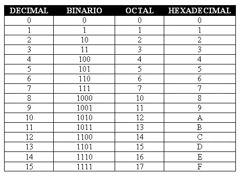
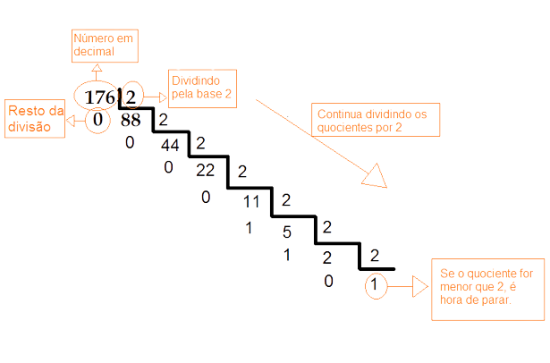
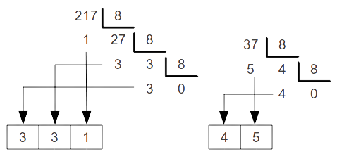
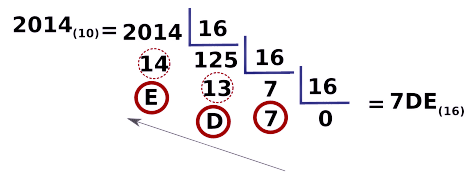
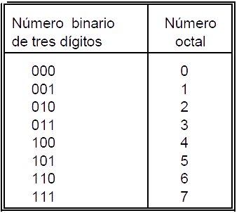
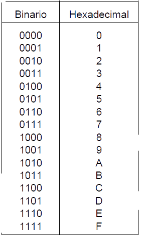
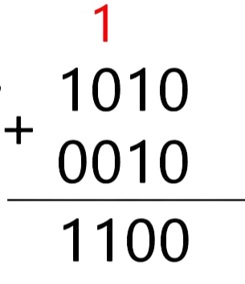
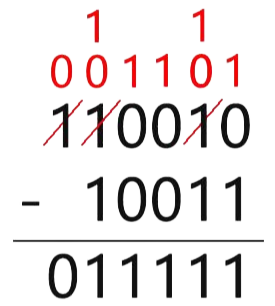

1º Trimestre
2º Trimestre
3º Trimestre


Um sistema de numeração é um conjunto de símbolos utilizados para representar quantidades numéricas. Um sistema pode possuir diferentes quantidades de símbolos para representar todos os números, um sistema com 10 símbolos é chamado de Sistema de Base Dez, um com 2 símbolos é um Sistema de Base Dois ou Binário. Podemos assim dizer que existem sistemas com qualquer quantidade de símbolos para representar os números, sendo assim, de qualquer base. Por exemplo: Base 2, Base 3, Base 4, Base 5... Porém os quatro mais importantes na área da Informática são:
Sistema decimal: (0, 1, 2, 3, 4, 5, 6, 7, 8, 9) = Base 10
Sistema Binário: (0, 1) = Base 2
Sistema Octal: (0, 1, 2, 3, 4, 5, 6, 7) = Base 8
Sistema Hexadecimal: (0, 1, 2, 3, 4, 5, 6, 7, 8, 9, A, B, C, D, E, F) = Base 16
Sistema Decimal:
É de Base 10 (0, 1, 2, 3, 4, 5, 6, 7, 8, 9), é um sistema posicional (a posição do algarismo altera o valor do número escrito)
Um número decimal seria decomposto da seguinte forma (cada dígito representando uma quantidade específica dependendo do seu posicionamento):
4972 = 4000 + 900 + 70 + 2 = 4 ∙ 103 + 9 ∙ 102 + 7 ∙ 101 + 2 ∙ 100
Sistema Binário:
É de Base 2 (0, 1), é um sistema posicional.
Assim como no sistema decimal os números vão aumentando utilizando um por um de todos os símbolos, por exemplo no sistema decimal: 0, 1, 2, 3, 4, 5, 6, 7, 8, 9, 10, 11, 12... Os números vão se repetindo de um jeito para formar novos números, o mesmo acontece no sistema Binário:
0, 1, 10, 11, 100, 101, 110, 111...
Notação: (25)10 = (11001)2
Sistema Octal:
É de Base 8 (0, 1, 2, 3, 4, 5, 6, 7), é um sistema posicional.
A forma de arranjar os símbolos é a mesma usada nos sistemas vistos anteriormente.
Notação: (47)10 = (57)8
Sistema Hexadecimal:
É de Base 16 (0, 1, 2, 3, 4, 5, 6, 7, 8, 9, A, B, C, D, E, F), é um sistema posicional.
A forma de arranjar os símbolos é a mesma usada nos sistemas vistos anteriormente.
Notação: (79)10 = (4F)16
Uma forma melhor de visualizar as relações entre o sistema decimal, Binário, Octal e Hexadecimal é por meio de uma tabela:

Tabela retirada de: https://mates4discretas.blogspot.com/2014/12/sistemas-numericos.html
Conversão de Base 10:
Para converter qualquer número decimal para qualquer outra base basta realizar divisões sucessivas pelo número da base que deseja transformar, por exemplo:
Para transformar um decimal em Base 2, basta dividi-lo por 2 sucessivamente até chegar a um quociente menor que a base (nesse caso, menos que 2), guardando o resto de cada divisão. O número Binário será o sequencial de restos obtidos, juntamente com o último quociente, da direita para a esquerda:

Imagem retirada de: https://zonadaeletrica.com.br/conversao-da-base-10-para-a-base-2/
Neste exemplo o número (176)10 se transformou no número (10110000)2
O mesmo método pode ser usado para Octal, porém agora dividimos até o quociente não poder mais ser dividido por 8:

Imagem retirada de: https://calculareconverter.com.br/converter-decimal-para-octal/
Neste exemplo, o número (217)10 e o número (37)10, se transformaram em (331)8 e (45)8 respectivamente.
Para transformar um decimal em Hexadecimal é o mesmo processo, porém agora dividindo por 16 até o quociente ser menor que 16, porém desta vez quando os restos forem 10, 11, 12, 13, 14, e 15, vamos substituir pelas letras A, B, C, D, E e F respectivamente:

Imagem retirada de: https://dev.to/womakerscode/bases-numericas-hexadecimal-3ldn
Conversão de qualquer Base para Base 10:
Do mesmo jeito que você pode transformar um número de Base 10 para qualquer outra base, também é possível transformar qualquer outra base para Base 10, podendo assim fazer a transformação de uma base para outra base qualquer de sua escolha.
Para isso usamos uma regra de decomposição, somamos todos os dígitos presentes no número, multiplicando o último número por N0, o penúltimo por N1, o antepenúltimo por N2 e assim por diante, sendo N o número que representa a base.
Por exemplo: para transformar o número (10110)2 para um número decimal precisamos decompor ele da seguinte forma:
1 ∙ 24 + 0 ∙ 23 + 1 ∙ 22 + 1 ∙ 21 + 0 ∙ 20 = 16 + 0 + 4 + 2 + 0 = (22)10
Para transformar um número octal para decimal o procedimento será o mesmo, porém vale ressaltar que a base dessa vez não será 2 e sim 8.
E para transformar um número hexadecimal para decimal o procedimento novamente será o mesmo, dessa vez utilizando a base 16, porém lembrando que as letras A, B, C, D, E, e F no sistema Hexadecimal significam 10, 11, 12, 13, 14 e 15 no sistema decimal, respectivamente.
Também é possível transformar números com Base 2 diretamente em números com Base 8 ou Base 16, ou ao contrário, transformar um número de Base 8 ou 16 em um número de Base 2.
Para transformar um número Binário em um número Octal ou Hexadecimal basta separarmos os dígitos do número Binário da direita para a esquerda em grupos de 3 dígitos (para Octal) ou em grupos de 4 dígitos (para Hexadecimal), adicionando zeros à esquerda do último grupo caso o grupo não tenha 3 dígitos (Octal) ou 4 dígitos (Hexadecimal), cada grupo formará um número Binário que deverá ser substituído pelos respectivos dígitos octais ou Hexadecimais, conforme as seguintes tabelas de equivalência:
 
Imagens retiradas de: https://sistemas.tech.blog/2019/05/12/sistemas-numericos/
Por exemplo: para transformar um número Binário como (100110010)2 em um número Octal ou Hexadecimal ele ficaria separado da seguinte forma:
Octal: (100110010)2 = (100/110/010)2 = (462)8
Hexadecimal: (100110010)2 = (0001/0011/0010)2 = (132)16
Agora para fazer o oposto, basta usar as mesmas tabelas, cada dígito de um número Octal ou Hexadecimal irá ser transformado em 3 dígitos Binários ou 4 dígitos, respectivamente.
Por exemplo: um número (47)8 em Binário seria (100111)2, pois (4)8 = (100)2 e (7)8 = (111)2, o mesmo vale para a transformação de Hexadecimal para Binário, porém usando sua respectiva tabela.
Adição e subtração com Binários: As adições e subtrações com números Binários seguem as mesmas regras utilizadas nas adições e subtrações com números decimais.
Adição:
0 + 0 = 0
1 + 0 = 1
0 + 1 = 1
1 + 1 = 10 (o resultado fica como 0 e o 1 é transportado para a próxima casa)
1 + 1 + 1 = 11 (fica o 1 e o outro 1 é transportado para a casa seguinte)

Imagem retirada de: https://tecdicas.com/adicao-binaria-em-circuitos-digitais/
Subtração:
0 - 0 = 0
1 - 0 = 1
1 - 1 = 0
0 - 1 = 1 (devemos pedir emprestado, assim como na subtração decimal, ficando 10 - 1 = 1)

Imagem retirada de: https://tecdicas.com/subtracao-binaria-em-circuitos-digitais/